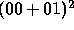

| Quirksome Squares |
The number 3025 has a remarkable quirk: if you split its decimal representation in two strings of equal length (30 and 25) and square the sum of the numbers so obtained, you obtain the original number:
The problem is to determine all numbers with this property having a given even number of digits.
For example, 4-digit numbers run from 0000 to 9999. Note that leading zeroes should be taken into account. This means that 0001 which is equal to  is a quirksome number of 4 digits. The number of digits may be 2,4,6 or 8. Although maxint is only 32767 and numbers of eight digits are asked for, a well-versed programmer can keep his numbers in the range of the integers. However efficiency should be given a thought.
The input of your program is a textflle containing numbers of digits (taken from 2,4,6,8), each number on a line of its own.
The output is a textfile consisting of lines containing the quirksome numbers (ordered according to the input numbers and for each input number in increasing order).
Warning: Please note that the number of digits in the output is equal to the number in the corresponding input line : leading zeroes may not be suppressed.
2 2
00 01 81 00 01 81